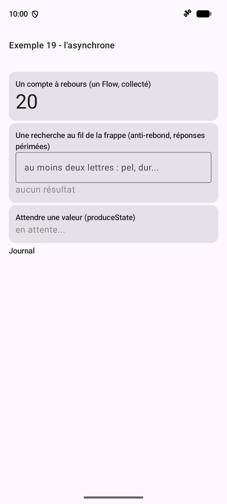
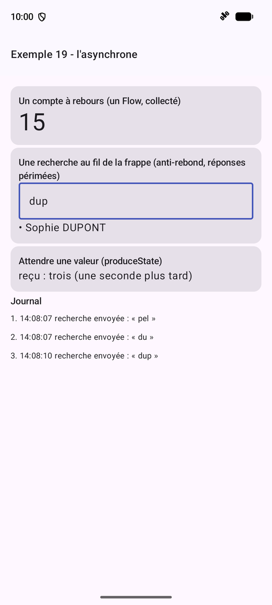
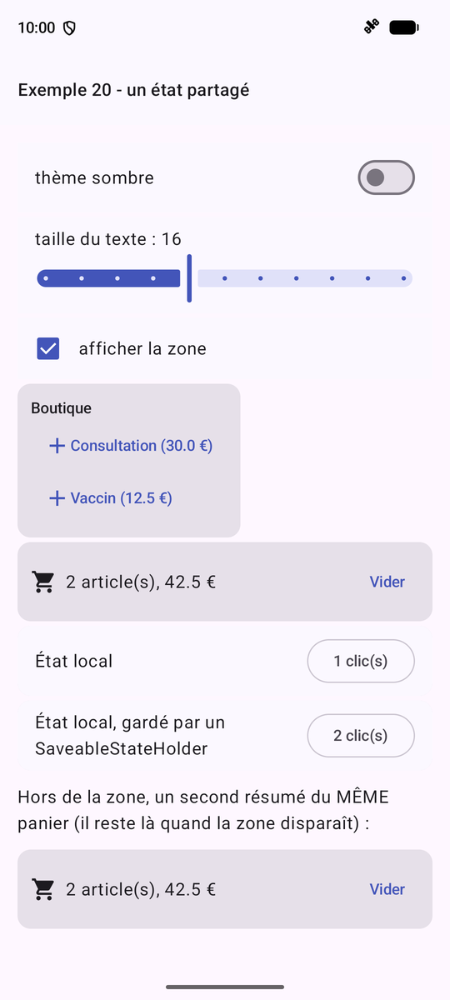
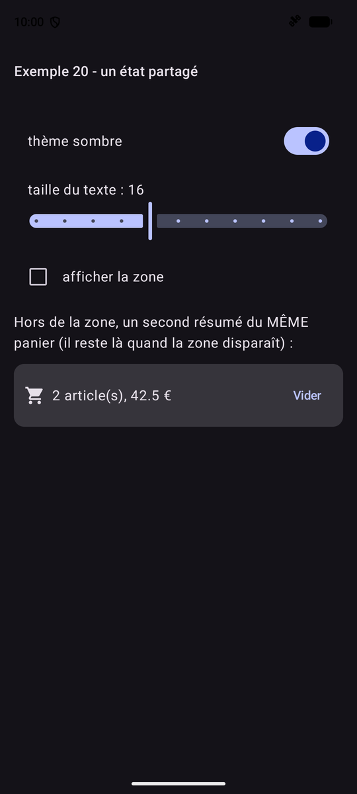
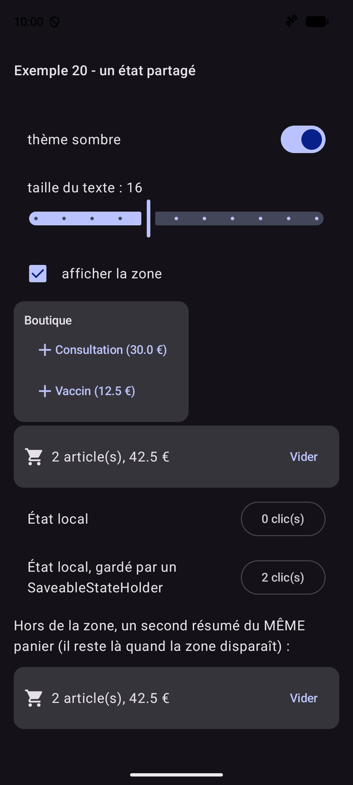

6. L'asynchrone et l'état partagé
6.1. Exemple 19 : coroutines, Flow et minuteries
Beaucoup de choses arrivent « plus tard » : les tics d'une minuterie, les frappes au clavier, la réponse d'un serveur. Là où [Dart] a ses [Future] et ses [Stream], [Kotlin] a les COROUTINES :
- une fonction [suspend] peut ATTENDRE ([delay], la réponse d'un serveur...) sans bloquer le téléphone : pendant l'attente, l'écran continue de vivre. Elle renvoie UNE valeur, plus tard : c'est l'équivalent d'une fonction [async] qui renvoie un [Future] ;
- un [Flow<T>] est une SUITE de valeurs, au fil du temps, qu'on transforme avec des opérateurs ([map], [debounce]...) : l'équivalent d'un [Stream] ;
- une coroutine est lancée dans une PORTÉE ([LaunchedEffect], [rememberCoroutineScope], [viewModelScope]...) ; elle est ANNULÉE quand sa portée disparaît.
| // =========================================================================
// ex19/Ex19Activity.kt - coroutines, Flow, minuteries
// -------------------------------------------------------------------------
// Beaucoup de choses arrivent "plus tard" : les tics d'une minuterie, les
// frappes au clavier, la réponse d'un serveur. Kotlin a pour cela les
// COROUTINES :
// - une fonction "suspend" peut ATTENDRE (delay, la réponse d'un
// serveur...) sans bloquer le téléphone : pendant l'attente, l'écran
// continue de vivre. Elle renvoie UNE valeur, plus tard ;
// - un Flow<T> est une SUITE de valeurs, au fil du temps (des tics, des
// saisies...), qu'on transforme avec des opérateurs (map, debounce...) ;
// - une coroutine est lancée dans une PORTÉE (scope) : LaunchedEffect,
// rememberCoroutineScope... ; elle est annulée quand sa portée disparaît.
// Compose sait afficher un Flow, en se recomposant à chaque valeur :
// collectAsStateWithLifecycle.
// =========================================================================
@file:OptIn(FlowPreview::class, ExperimentalCoroutinesApi::class)
package fr.stahe.exemples.ex19
import android.os.Bundle
import androidx.activity.ComponentActivity
import androidx.activity.compose.setContent
import androidx.activity.enableEdgeToEdge
import androidx.compose.foundation.layout.Column
import androidx.compose.foundation.layout.fillMaxWidth
import androidx.compose.foundation.layout.padding
import androidx.compose.material3.Card
import androidx.compose.material3.MaterialTheme
import androidx.compose.material3.OutlinedTextField
import androidx.compose.material3.Text
import androidx.compose.runtime.Composable
import androidx.compose.runtime.LaunchedEffect
import androidx.compose.runtime.getValue
import androidx.compose.runtime.mutableStateListOf
import androidx.compose.runtime.mutableStateOf
import androidx.compose.runtime.produceState
import androidx.compose.runtime.remember
import androidx.compose.runtime.setValue
import androidx.compose.runtime.snapshotFlow
import androidx.compose.ui.Modifier
import androidx.compose.ui.graphics.Color
import androidx.compose.ui.unit.dp
import androidx.compose.ui.unit.sp
import androidx.lifecycle.compose.collectAsStateWithLifecycle
import fr.stahe.exemples.commun.PageExemple
import fr.stahe.exemples.commun.ThemeExemples
import kotlinx.coroutines.CancellationException
import kotlinx.coroutines.ExperimentalCoroutinesApi
import kotlinx.coroutines.FlowPreview
import kotlinx.coroutines.delay
import kotlinx.coroutines.flow.Flow
import kotlinx.coroutines.flow.debounce
import kotlinx.coroutines.flow.flow
import kotlinx.coroutines.flow.map
import kotlinx.coroutines.flow.mapLatest
import java.time.LocalTime
import java.time.format.DateTimeFormatter
import kotlin.random.Random
val medecins = listOf("Marie PELISSIER", "Paul TATOU", "Sophie DUPONT", "Jacques DURAND", "Martine PELLETIER")
// un "serveur" simulé : une fonction SUSPENDUE, dont la réponse arrive
// après un délai aléatoire
suspend fun rechercher(texte: String): List<String> {
delay(200L + Random.nextLong(600))
return medecins.filter { it.lowercase().contains(texte) }
}
// 1. un Flow fabriqué par le constructeur flow { } : chaque emit ENVOIE une
// valeur à celui qui le collecte
fun compteARebours(depart: Int): Flow<Int> = flow {
for (reste in depart downTo 0) {
emit(reste)
if (reste > 0) delay(1000)
}
}
fun heureCourante(): String = LocalTime.now().format(DateTimeFormatter.ofPattern("HH:mm:ss"))
class Ex19Activity : ComponentActivity() {
override fun onCreate(savedInstanceState: Bundle?) {
super.onCreate(savedInstanceState)
enableEdgeToEdge()
setContent { ThemeExemples { PageAsynchrone() } }
}
}
@Composable
fun PageAsynchrone() {
val journal = remember { mutableStateListOf<String>() }
fun tracer(message: String) = journal.add("${heureCourante()} $message")
// le Flow est créé UNE fois (remember) : sans cela, chaque recomposition
// relancerait le compte à rebours !
val rebours = remember { compteARebours(20) }
// collectAsStateWithLifecycle : un état qui suit les valeurs du Flow
// (null avant la première) ; la collecte s'arrête si l'application
// passe au second plan
val reste by rebours.collectAsStateWithLifecycle(initialValue = null)
// 2. la recherche au fil de la frappe
var saisie by remember { mutableStateOf("") }
var resultats by remember { mutableStateOf(listOf<String>()) }
LaunchedEffect(Unit) {
// snapshotFlow : un Flow des valeurs successives d'un état Compose
snapshotFlow { saisie }
// l'ANTI-REBOND : une saisie n'est transmise qu'après 400 ms sans frappe
.debounce(400)
.map { it.trim().lowercase() }
// mapLatest : une nouvelle saisie ANNULE la recherche précédente,
// si elle n'est pas terminée : pas de réponse périmée
.mapLatest { texte ->
// moins de deux lettres : pas de recherche, aucun résultat
if (texte.length < 2) return@mapLatest emptyList()
tracer("recherche envoyée : « $texte »")
try {
rechercher(texte)
} catch (e: CancellationException) {
tracer("recherche annulée (périmée) : « $texte »")
throw e // une coroutine annulée doit le rester
}
}
// collect : consomme les valeurs du Flow, une à une
.collect { resultats = it }
}
// 3. une valeur qui arrive au bout d'une seconde : produceState lance une
// coroutine qui PRODUIT un état
val message by produceState<String?>(initialValue = null) {
delay(1000)
value = "trois (une seconde plus tard)"
}
val styleTitre = MaterialTheme.typography.titleSmall
PageExemple("Exemple 19 - l'asynchrone") {
Card(Modifier.fillMaxWidth()) {
Column(Modifier.padding(12.dp)) {
Text("Un compte à rebours (un Flow, collecté)", style = styleTitre)
Text(reste?.toString() ?: "...", style = MaterialTheme.typography.displaySmall)
}
}
Card(Modifier.fillMaxWidth()) {
Column(Modifier.padding(12.dp)) {
Text("Une recherche au fil de la frappe (anti-rebond, réponses périmées)", style = styleTitre)
OutlinedTextField(
value = saisie,
onValueChange = { saisie = it },
placeholder = { Text("au moins deux lettres : pel, dur...") },
singleLine = true,
modifier = Modifier.fillMaxWidth(),
)
for (r in resultats) Text("• $r")
if (resultats.isEmpty()) Text("aucun résultat", color = Color.Gray)
}
}
Card(Modifier.fillMaxWidth()) {
Column(Modifier.padding(12.dp)) {
Text("Attendre une valeur (produceState)", style = styleTitre)
// tant que la valeur n'est pas arrivée : le texte d'attente
if (message == null) Text("en attente...", color = Color.Gray) else Text("reçu : $message")
}
}
Text("Journal", style = styleTitre)
journal.forEachIndexed { i, ligne -> Text("${i + 1}. $ligne", fontSize = 12.sp) }
}
}
|
- lignes 65-67 : un « serveur » simulé : une fonction suspendue dont la réponse arrive après un délai aléatoire ;
- lignes 72-75 : un [Flow] fabriqué par [flow [ ... ]] : chaque [emit] envoie une valeur à celui qui le collecte ; [downTo] : une boucle descendante ;
- lignes 96-100 : le [Flow] est créé UNE fois ([remember]) : sans cela, chaque recomposition relancerait le compte à rebours ! [collectAsStateWithLifecycle] en fait un état, qui suit ses valeurs ; la collecte s'arrête quand l'application passe au second plan ;
- lignes 107-125 : la recherche au fil de la frappe. [snapshotFlow [ saisie ]] : le [Flow] des valeurs successives d'un état [Compose] ; [debounce(400)], l'ANTI-REBOND : une saisie n'est transmise qu'après 400 ms sans frappe ; [mapLatest] : une nouvelle saisie ANNULE la recherche précédente, si elle n'est pas terminée : pas de réponse périmée ;
- lignes 119-121 : une coroutine annulée reçoit une [CancellationException] : on peut la tracer, mais on doit la relancer ([throw e]) pour que l'annulation aille au bout ;
- lignes 130-132 : [produceState] : une coroutine qui PRODUIT un état (ici, une valeur qui arrive au bout d'une seconde).


À gauche, au démarrage ; à droite, après la saisie rapide de « pel », « du », puis « dup » : seules les saisies suivies d'une pause ont donné lieu à une recherche, et l'affichage est celui de la dernière.
6.2. Exemple 20 : un état partagé
Un « magasin » (store) est un état qui vit HORS des écrans, en UN seul exemplaire, partagé par tous ceux qui le lisent. L'exemple 14 l'a fait à la main ; [Android] fournit pour cela le [ViewModel] : un objet créé à la PREMIÈRE demande ([viewModel()]), rendu ensuite à l'identique à tous ceux qui le demandent, et qui SURVIT à la recréation de l'activité (rotation de l'écran, changement de langue). C'est l'équivalent des paquets [provider] ou [riverpod] de [Flutter].
| // =========================================================================
// ex20/magasins/Panier.kt - un ÉTAT PARTAGÉ, dans un ViewModel
// -------------------------------------------------------------------------
// Un "magasin" (store) est un état qui vit HORS des écrans, en UN seul
// exemplaire, partagé par tous ceux qui le lisent. L'exemple 14 l'a fait
// à la main (CompositionLocal) ; Android fournit pour cela le ViewModel :
// - un objet créé à la PREMIÈRE demande, puis rendu à l'identique à
// toutes les fonctions de l'activité qui le demandent : viewModel() ;
// - qui SURVIT à la recréation de l'activité (rotation de l'écran,
// changement de langue) : il n'est détruit que quand l'activité est
// définitivement fermée.
// Organisation habituelle :
// - l'ÉTAT : un MutableStateFlow PRIVÉ, une valeur observable ; dehors, on
// n'en voit qu'une version en lecture seule (StateFlow) ;
// - les ACTIONS : des fonctions, seules à modifier l'état ;
// - les valeurs calculées : d'autres StateFlow, déduits du premier (map),
// qui ne changent QUE si leur valeur change.
// =========================================================================
package fr.stahe.exemples.ex20.magasins
import androidx.lifecycle.ViewModel
import androidx.lifecycle.viewModelScope
import kotlinx.coroutines.flow.MutableStateFlow
import kotlinx.coroutines.flow.SharingStarted
import kotlinx.coroutines.flow.StateFlow
import kotlinx.coroutines.flow.asStateFlow
import kotlinx.coroutines.flow.map
import kotlinx.coroutines.flow.stateIn
import kotlinx.coroutines.flow.update
data class Article(val libelle: String, val prix: Double)
class Panier : ViewModel() {
private val _articles = MutableStateFlow(listOf<Article>())
val articles: StateFlow<List<Article>> = _articles.asStateFlow()
// des valeurs DÉDUITES : stateIn en fait des StateFlow, qui vivent aussi
// longtemps que le ViewModel (viewModelScope)
val nombre: StateFlow<Int> = articles.map { it.size }.stateIn(viewModelScope, SharingStarted.Eagerly, 0)
val total: StateFlow<Double> = articles.map { liste -> liste.sumOf { it.prix } }.stateIn(viewModelScope, SharingStarted.Eagerly, 0.0)
// update : remplace la valeur par une nouvelle, calculée à partir de l'ancienne
fun ajouter(article: Article) = _articles.update { it + article }
fun vider() {
_articles.value = emptyList()
}
}
|
- lignes 34-35 : l'ÉTAT : un [MutableStateFlow] PRIVÉ, une valeur observable ; dehors, on n'en voit qu'une version en lecture seule ([StateFlow]) ;
- lignes 39-40 : des valeurs DÉDUITES : [map], puis [stateIn], qui en fait des [StateFlow] vivant aussi longtemps que le [ViewModel] ([viewModelScope]). Un [StateFlow] n'émet que si sa valeur CHANGE ;
- lignes 43-46 : les ACTIONS, seules à modifier l'état ; [update] remplace la valeur par une nouvelle, calculée à partir de l'ancienne.
Pour qu'une donnée survive à l'ARRÊT de l'application, il faut la ranger sur l'appareil. La bibliothèque [DataStore] de [Jetpack] offre un petit dictionnaire clé → valeur, conservé dans un fichier propre à l'application :
| // =========================================================================
// ex20/magasins/Preferences.kt - un état qui survit à l'arrêt
// -------------------------------------------------------------------------
// Pour qu'une donnée survive à l'arrêt de l'application, il faut la ranger
// SUR L'APPAREIL. La bibliothèque DataStore de Jetpack offre un petit
// dictionnaire clé -> valeur (Boolean, Int, Float, String...), propre à
// l'application et conservé dans un fichier du téléphone :
// - la lecture est un Flow : il émet les valeurs mémorisées (lues de
// façon asynchrone, sans bloquer l'écran), puis chaque nouvelle valeur ;
// - l'écriture est une fonction suspendue (edit).
// On n'y range JAMAIS de donnée sensible (mot de passe, jeton) : elles y
// sont écrites en clair.
// =========================================================================
package fr.stahe.exemples.ex20.magasins
import android.content.Context
import androidx.datastore.core.DataStore
import androidx.datastore.preferences.core.Preferences
import androidx.datastore.preferences.core.booleanPreferencesKey
import androidx.datastore.preferences.core.edit
import androidx.datastore.preferences.core.floatPreferencesKey
import androidx.datastore.preferences.preferencesDataStore
import kotlinx.coroutines.flow.Flow
import kotlinx.coroutines.flow.map
// LE fichier de préférences de l'exemple : une propriété d'extension de
// Context, déléguée à preferencesDataStore (un seul DataStore par fichier)
val Context.stockage: DataStore<Preferences> by preferencesDataStore(name = "exemple20")
// ce qui est mémorisé
data class Reglages(val sombre: Boolean, val taille: Float)
class PreferencesUtilisateur(private val stockage: DataStore<Preferences>) {
private val cleSombre = booleanPreferencesKey("sombre")
private val cleTaille = floatPreferencesKey("taille")
// ce que l'appareil a mémorisé, sinon les valeurs par défaut
val reglages: Flow<Reglages> = stockage.data.map { p -> Reglages(p[cleSombre] ?: false, p[cleTaille] ?: 16f) }
// un paramètre nommé facultatif par préférence : on ne change que ce qui est fourni
suspend fun modifier(sombre: Boolean? = null, taille: Float? = null) {
stockage.edit { p ->
if (sombre != null) p[cleSombre] = sombre
if (taille != null) p[cleTaille] = taille
}
}
}
|
- ligne 28 : LE fichier de préférences de l'exemple : une propriété d'extension de [Context], déléguée à [preferencesDataStore] (un seul [DataStore] par fichier) ;
- ligne 38 : la lecture est un [Flow] : il émet les valeurs mémorisées (lues sans bloquer l'écran), puis chaque nouvelle valeur ;
- lignes 41-44 : l'écriture est une fonction suspendue ([edit]). On n'y range JAMAIS de donnée sensible (mot de passe, jeton) : elles y sont écrites en clair.
Les composants qui utilisent le panier :
| // =========================================================================
// ex20/composants/Composants.kt - trois composants de l'exemple 20
// -------------------------------------------------------------------------
// viewModel() : le Panier de l'activité, créé à la première demande, puis
// le MÊME pour tous ceux qui le demandent.
// =========================================================================
package fr.stahe.exemples.ex20.composants
import androidx.compose.foundation.layout.Column
import androidx.compose.foundation.layout.Row
import androidx.compose.foundation.layout.Spacer
import androidx.compose.foundation.layout.padding
import androidx.compose.foundation.layout.width
import androidx.compose.material.icons.Icons
import androidx.compose.material.icons.filled.Add
import androidx.compose.material.icons.filled.ShoppingCart
import androidx.compose.material3.Card
import androidx.compose.material3.Icon
import androidx.compose.material3.ListItem
import androidx.compose.material3.MaterialTheme
import androidx.compose.material3.OutlinedButton
import androidx.compose.material3.Text
import androidx.compose.material3.TextButton
import androidx.compose.runtime.Composable
import androidx.compose.runtime.getValue
import androidx.compose.runtime.mutableIntStateOf
import androidx.compose.runtime.saveable.rememberSaveable
import androidx.compose.runtime.setValue
import androidx.compose.ui.Alignment
import androidx.compose.ui.Modifier
import androidx.compose.ui.unit.dp
import androidx.lifecycle.compose.collectAsStateWithLifecycle
import androidx.lifecycle.viewmodel.compose.viewModel
import fr.stahe.exemples.ex20.magasins.Article
import fr.stahe.exemples.ex20.magasins.Panier
val produits = listOf(Article("Consultation", 30.0), Article("Vaccin", 12.5))
// AJOUTE au panier partagé : la boutique ne LIT pas le panier, elle n'est
// pas recomposée quand il change
@Composable
fun Boutique(panier: Panier = viewModel()) {
Card {
Column(Modifier.padding(12.dp)) {
Text("Boutique", style = MaterialTheme.typography.titleSmall)
for (p in produits) {
TextButton(onClick = { panier.ajouter(p) }) {
Icon(Icons.Default.Add, contentDescription = null)
Text("${p.libelle} (${p.prix} €)")
}
}
}
}
}
// LIT le même panier : seulement le nombre et le total (recomposé
// seulement si l'un des deux change)
@Composable
fun ResumePanier(panier: Panier = viewModel()) {
val nombre by panier.nombre.collectAsStateWithLifecycle()
val total by panier.total.collectAsStateWithLifecycle()
Card {
Row(Modifier.padding(12.dp), verticalAlignment = Alignment.CenterVertically) {
Icon(Icons.Default.ShoppingCart, contentDescription = null)
Spacer(Modifier.width(8.dp))
Text("$nombre article(s), $total €", Modifier.weight(1f))
TextButton(onClick = { panier.vider() }, enabled = nombre > 0) { Text("Vider") }
}
}
}
// un état LOCAL (rememberSaveable), qui disparaît avec le composant...
// sauf s'il est placé dans un SaveableStateProvider (cf. Ex20Activity.kt)
@Composable
fun CompteurLocal(titre: String) {
var clics by rememberSaveable { mutableIntStateOf(0) }
Card {
ListItem(
headlineContent = { Text(titre) },
trailingContent = { OutlinedButton(onClick = { clics++ }) { Text("$clics clic(s)") } },
)
}
}
|
- ligne 42 : [panier: Panier = viewModel()] : le panier de l'activité, créé à la première demande. La boutique AJOUTE au panier sans le lire : elle n'est pas recomposée quand il change ;
- lignes 60-61 : le résumé ne lit que le nombre et le total : il n'est recomposé que si l'un des deux change ;
- lignes 75-76 : un état LOCAL, qui disparaît avec le composant.
L'écran :
| // =========================================================================
// ex20/Ex20Activity.kt - trois "portées" de données
// -------------------------------------------------------------------------
// - l'état LOCAL d'un composant (CompteurLocal) disparaît avec lui ;
// - l'état d'un MAGASIN (le panier, un ViewModel) est partagé par tous
// les composants et survit à leur retrait, et même à une rotation de
// l'écran - mais pas à l'arrêt de l'application ;
// - l'état rangé sur l'appareil (les préférences, DataStore) survit à
// l'arrêt.
// Et le SaveableStateHolder : il GARDE l'état local (rememberSaveable)
// d'un contenu retiré de l'écran, et le lui rend s'il revient.
// Décochez puis recochez "afficher la zone", puis arrêtez et relancez
// l'application : comparez.
// =========================================================================
package fr.stahe.exemples.ex20
import android.os.Bundle
import androidx.activity.ComponentActivity
import androidx.activity.compose.setContent
import androidx.activity.enableEdgeToEdge
import androidx.compose.foundation.layout.padding
import androidx.compose.foundation.selection.toggleable
import androidx.compose.material3.Checkbox
import androidx.compose.material3.ListItem
import androidx.compose.material3.Slider
import androidx.compose.material3.Switch
import androidx.compose.material3.Text
import androidx.compose.runtime.Composable
import androidx.compose.runtime.CompositionLocalProvider
import androidx.compose.runtime.getValue
import androidx.compose.runtime.mutableStateOf
import androidx.compose.runtime.rememberCoroutineScope
import androidx.compose.runtime.saveable.rememberSaveable
import androidx.compose.runtime.saveable.rememberSaveableStateHolder
import androidx.compose.runtime.setValue
import androidx.compose.ui.Modifier
import androidx.compose.ui.platform.LocalDensity
import androidx.compose.ui.unit.Density
import androidx.compose.ui.unit.dp
import androidx.lifecycle.compose.collectAsStateWithLifecycle
import fr.stahe.exemples.commun.PageExemple
import fr.stahe.exemples.commun.ThemeExemples
import fr.stahe.exemples.ex20.composants.Boutique
import fr.stahe.exemples.ex20.composants.CompteurLocal
import fr.stahe.exemples.ex20.composants.ResumePanier
import fr.stahe.exemples.ex20.magasins.PreferencesUtilisateur
import fr.stahe.exemples.ex20.magasins.stockage
import kotlinx.coroutines.launch
import kotlin.math.roundToInt
class Ex20Activity : ComponentActivity() {
// lazy : l'objet est créé au premier usage (le contexte de l'application
// n'existe pas encore quand l'activité est construite)
private val preferences by lazy { PreferencesUtilisateur(applicationContext.stockage) }
override fun onCreate(savedInstanceState: Bundle?) {
super.onCreate(savedInstanceState)
enableEdgeToEdge()
setContent { Application(preferences) }
}
}
@Composable
fun Application(preferences: PreferencesUtilisateur) {
// les préférences mémorisées : null tant qu'elles n'ont pas été lues
val reglages by preferences.reglages.collectAsStateWithLifecycle(initialValue = null)
val r = reglages ?: return // rien à afficher avant la lecture (quelques millisecondes)
val portee = rememberCoroutineScope()
// le thème sombre, ou clair
ThemeExemples(sombre = r.sombre) {
// la taille du texte : fontScale multiplie la taille de TOUS les textes
val densite = LocalDensity.current
CompositionLocalProvider(LocalDensity provides Density(densite.density, fontScale = r.taille / 16f)) {
PageEtatPartage(
sombre = r.sombre,
taille = r.taille,
onSombre = { v -> portee.launch { preferences.modifier(sombre = v) } },
onTaille = { v -> portee.launch { preferences.modifier(taille = v) } },
)
}
}
}
@Composable
fun PageEtatPartage(sombre: Boolean, taille: Float, onSombre: (Boolean) -> Unit, onTaille: (Float) -> Unit) {
var zoneVisible by rememberSaveable { mutableStateOf(true) }
// le gardien des états des contenus retirés
val etatsGardes = rememberSaveableStateHolder()
PageExemple("Exemple 20 - un état partagé") {
ListItem(
headlineContent = { Text("thème sombre") },
trailingContent = { Switch(checked = sombre, onCheckedChange = onSombre) },
)
ListItem(
headlineContent = { Text("taille du texte : ${taille.roundToInt()}") },
supportingContent = { Slider(value = taille, onValueChange = onTaille, valueRange = 12f..22f, steps = 9) },
)
ListItem(
modifier = Modifier.toggleable(value = zoneVisible, onValueChange = { zoneVisible = it }),
leadingContent = { Checkbox(checked = zoneVisible, onCheckedChange = null) },
headlineContent = { Text("afficher la zone") },
)
if (zoneVisible) {
// retirés : ces composants disparaissent, avec leur état local
Boutique()
ResumePanier()
CompteurLocal("État local")
// retiré lui aussi, mais son état est GARDÉ par etatsGardes, sous la clé "compteur"
etatsGardes.SaveableStateProvider("compteur") {
CompteurLocal("État local, gardé par un SaveableStateHolder")
}
}
Text(
"Hors de la zone, un second résumé du MÊME panier (il reste là quand la zone disparaît) :",
Modifier.padding(vertical = 8.dp),
)
ResumePanier()
}
}
|
- ligne 54 : [by lazy] : l'objet est créé au premier usage (le contexte de l'application n'existe pas encore quand l'activité est construite) ;
- lignes 66-67 : les préférences lues ; [?: return] : rien à afficher tant qu'elles n'ont pas été lues (quelques millisecondes) ;
- lignes 71-79 : le thème sombre ou clair, et la taille de TOUS les textes ([fontScale] de [LocalDensity], une [CompositionLocal]) ; modifier une préférence lance une coroutine ;
- lignes 89-112 : [rememberSaveableStateHolder] : un gardien qui GARDE l'état local ([rememberSaveable]) d'un contenu retiré de l'écran, et le lui rend s'il revient.



À gauche, deux articles et des clics sur les deux compteurs ; au milieu, thème sombre et zone masquée : le résumé hors de la zone voit toujours le panier ; à droite, la zone réaffichée : le panier est intact, le compteur local est revenu à 0, le compteur gardé a retrouvé sa valeur. Arrêtez puis relancez l'application : seules les préférences (thème, taille du texte) ont survécu.